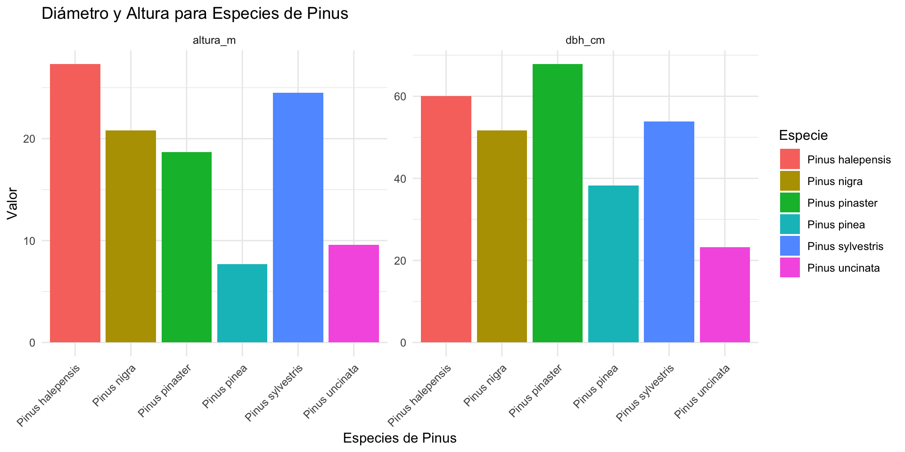

x y
1 1 A
2 2 B
3 3 CTidy data
Antonio J. Pérez-Luque ![]()
Instituto de Ciencias Forestales (CIFOR) | INIA-CSIC (Madrid)
2025-01-17


data.frame & tibble
data.frame
- Es la estructura más común para manejar datos tabulares en R
- Funcionan como una tabla: filas (observaciones) y columnas (variables)
- Introducidos con el lenguaje base de R
tibble
- Versión mejorada de
data.frameincluida en el pkg tibble (tidyverse). - Diseñados para ser más consistentes y fáciles de usar.
- Permite manejar variables no-sintácticas (a diferencia de R-base).
Diferencias: impresión de datos
Diferencias: impresión de datos
tibble:- Imprimen un resumen compacto: muestran las primeras 10 filas y columnas que caben en la consola (se puede modificar, ver esto).
- Formato mas amigable para explorar grandes volúmenes de datos.
- Imprimen también la
str()de los datos
Diferencias: manejo de tipo de datos
data.frame: las columnas de tipo carácter se convierten automáticamente a factores, a menos que especifiquesstringsAsFactors = FALSE.tibble: nunca convierten caracteres a factores de forma automática.
data.frame vs. tibble
- data.frame: Útiles en scripts básicos o cuando no necesitas integrarte al tidyverse.
- tibble: Más consistentes, ideales para trabajar con el tidyverse y explorar datos.
Generar tibble
Crear tibble directamente
arboles <- tibble(
especie = c("Pinus halepensis", "Quercus ilex", "Quercus ilex",
"Pinus pinaster", "Quercus pyrenaica"),
altura_m = c(15, 8, 10, 12, 18),
dbh_cm = c(30, 40, 35, 25, 45),
site = c("plot_A", "plot_B", "plot_C", "plot_A", "plot_B")
)
arboles # A tibble: 5 × 4
especie altura_m dbh_cm site
<chr> <dbl> <dbl> <chr>
1 Pinus halepensis 15 30 plot_A
2 Quercus ilex 8 40 plot_B
3 Quercus ilex 10 35 plot_C
4 Pinus pinaster 12 25 plot_A
5 Quercus pyrenaica 18 45 plot_BCrear tibble transpuesto (tribble)
arboles <- tribble(
~especie, ~altura_m, ~dbh_cm, ~site,
"Pinus halepensis", 15, 30, "plot_A",
"Quercus ilex", 8, 40, "plot_B",
"Quercus ilex", 10, 35, "plot_C",
"Pinus pinaster", 12, 25, "plot_A",
"Quercus pyrenaica", 18, 45, "plot_B"
)
arboles # A tibble: 5 × 4
especie altura_m dbh_cm site
<chr> <dbl> <dbl> <chr>
1 Pinus halepensis 15 30 plot_A
2 Quercus ilex 8 40 plot_B
3 Quercus ilex 10 35 plot_C
4 Pinus pinaster 12 25 plot_A
5 Quercus pyrenaica 18 45 plot_BCrear tibble a partir de listas complejas (enframe)
Crear tibble a partir de listas complejas (enframe) (II)
datos_forestales <- list(
parcela_1 = list(
especie = c("Pinus halepensis", "Quercus ilex"),
n_ind = c(10, 5),
dbh_cm = c(25, 30)
),
parcela_2 = list(
especie = c("Pinus pinaster", "Quercus pyrenaica"),
n_ind = c(15, 8),
dbh_cm = c(20, 35)
),
parcela_3 = list(
especie = c("Pinus sylvestris"),
n_ind = c(12),
dbh_cm = c(40)
)
)# A tibble: 5 × 4
parcela especie n_ind dbh_cm
<chr> <chr> <dbl> <dbl>
1 parcela_1 Pinus halepensis 10 25
2 parcela_1 Quercus ilex 5 30
3 parcela_2 Pinus pinaster 15 20
4 parcela_2 Quercus pyrenaica 8 35
5 parcela_3 Pinus sylvestris 12 40Manipular datos con tidyverse
Explorar datos
# A tibble: 8,786 × 10
plot aspect slope tree_id specie dbh height tree_density_factor
<chr> <dbl> <dbl> <dbl> <chr> <dbl> <dbl> <dbl>
1 0792 270 27 1 Pinus halepensis 8.5 3.8 127.
2 0792 270 27 2 Pinus halepensis 15.4 4.90 31.8
3 0792 330. 40 10 Pinus halepensis 13.4 6.70 31.8
4 0792 330. 40 12 Pinus halepensis 13.0 6.90 31.8
5 0792 330. 40 1 Quercus ilex ssp… 13 2.40 31.8
6 0792 330. 40 2 Quercus ilex ssp… 10.0 2 127.
7 0792 330. 40 3 Quercus ilex ssp… 14.0 2 31.8
8 0792 330. 40 4 Quercus ilex ssp… 13.4 2.60 31.8
9 0792 330. 40 5 Quercus ilex ssp… 10.2 2.3 127.
10 0792 330. 40 6 Quercus ilex ssp… 10.4 2 127.
# ℹ 8,776 more rows
# ℹ 2 more variables: tree_quality_wood <dbl>, prov <chr>Explorar datos
Rows: 8,786
Columns: 10
$ plot <chr> "0792", "0792", "0792", "0792", "0792", "0792", "0…
$ aspect <dbl> 270.0, 270.0, 330.3, 330.3, 330.3, 330.3, 330.3, 3…
$ slope <dbl> 27, 27, 40, 40, 40, 40, 40, 40, 40, 40, 40, 40, 40…
$ tree_id <dbl> 1, 2, 10, 12, 1, 2, 3, 4, 5, 6, 7, 8, 9, 11, 1, 3,…
$ specie <chr> "Pinus halepensis", "Pinus halepensis", "Pinus hal…
$ dbh <dbl> 8.50, 15.45, 13.40, 12.95, 13.00, 10.05, 14.05, 13…
$ height <dbl> 3.8, 4.9, 6.7, 6.9, 2.4, 2.0, 2.0, 2.6, 2.3, 2.0, …
$ tree_density_factor <dbl> 127.32395, 31.83099, 31.83099, 31.83099, 31.83099,…
$ tree_quality_wood <dbl> 2, 2, 2, 2, 5, 5, 5, 5, 5, 5, 5, 5, 5, 5, 2, 2, 2,…
$ prov <chr> "Almeria", "Almeria", "Almeria", "Almeria", "Almer…Manipular datos: ordenar
- Ordena los datos por pendiente
# A tibble: 8,786 × 10
plot aspect slope tree_id specie dbh height tree_density_factor
<chr> <dbl> <dbl> <dbl> <chr> <dbl> <dbl> <dbl>
1 0811 202. 7.5 1 Pinus sylvestris 13.6 6.70 31.8
2 0811 202. 7.5 2 Pinus sylvestris 14.6 6.30 31.8
3 0811 202. 7.5 3 Pinus sylvestris 15.1 6.20 31.8
4 0811 202. 7.5 4 Pinus sylvestris 13.6 5.40 31.8
5 0811 202. 7.5 5 Pinus sylvestris 13 6.10 31.8
6 0811 202. 7.5 6 Pinus sylvestris 13.8 6.70 31.8
7 0811 202. 7.5 7 Pinus sylvestris 14.6 6.40 31.8
8 0811 202. 7.5 8 Pinus sylvestris 16.4 6.80 31.8
9 0811 202. 7.5 9 Pinus sylvestris 20.5 7.30 31.8
10 0811 202. 7.5 10 Pinus sylvestris 13.9 5.90 31.8
# ℹ 8,776 more rows
# ℹ 2 more variables: tree_quality_wood <dbl>, prov <chr>Manipular datos: ordenar
- Ordena los datos por pendiente decreciente
# A tibble: 8,786 × 10
plot aspect slope tree_id specie dbh height tree_density_factor
<chr> <dbl> <dbl> <dbl> <chr> <dbl> <dbl> <dbl>
1 0792 330. 40 10 Pinus halepensis 13.4 6.70 31.8
2 0792 330. 40 12 Pinus halepensis 13.0 6.90 31.8
3 0792 330. 40 1 Quercus ilex ssp… 13 2.40 31.8
4 0792 330. 40 2 Quercus ilex ssp… 10.0 2 127.
5 0792 330. 40 3 Quercus ilex ssp… 14.0 2 31.8
6 0792 330. 40 4 Quercus ilex ssp… 13.4 2.60 31.8
7 0792 330. 40 5 Quercus ilex ssp… 10.2 2.3 127.
8 0792 330. 40 6 Quercus ilex ssp… 10.4 2 127.
9 0792 330. 40 7 Quercus ilex ssp… 13 2.10 31.8
10 0792 330. 40 8 Quercus ilex ssp… 7.75 2 127.
# ℹ 8,776 more rows
# ℹ 2 more variables: tree_quality_wood <dbl>, prov <chr>Manipular datos: ordenar
- Ordena los datos por especie, de mayor a menor (altura)
# A tibble: 8,786 × 10
plot aspect slope tree_id specie dbh height tree_density_factor
<chr> <dbl> <dbl> <dbl> <chr> <dbl> <dbl> <dbl>
1 0924 198 40 2 Acacia spp. 25.6 12.1 14.1
2 0924 198 40 3 Acacia spp. 25.7 NA 14.1
3 1247 161. 40 1 Acer opalus 14.4 9.10 31.8
4 1264 194. 40 2 Acer opalus 17.7 7.80 31.8
5 1264 194. 40 4 Acer opalus 15.8 7.60 31.8
6 1264 194. 40 3 Acer opalus 19.1 6.70 31.8
7 1264 194. 40 1 Acer opalus 13.2 6.5 31.8
8 1247 161. 40 2 Acer opalus 12.6 5 31.8
9 0904 167. 16 12 Alnus glutinosa 32.4 16.6 14.1
10 0904 167. 16 15 Alnus glutinosa 32.2 15.2 14.1
# ℹ 8,776 more rows
# ℹ 2 more variables: tree_quality_wood <dbl>, prov <chr>Manipular datos: organizar columnas
- Cambiar orden de las columnas
# A tibble: 8,786 × 10
aspect slope tree_id specie dbh height tree_density_factor
<dbl> <dbl> <dbl> <chr> <dbl> <dbl> <dbl>
1 270 27 1 Pinus halepensis 8.5 3.8 127.
2 270 27 2 Pinus halepensis 15.4 4.90 31.8
3 330. 40 10 Pinus halepensis 13.4 6.70 31.8
4 330. 40 12 Pinus halepensis 13.0 6.90 31.8
5 330. 40 1 Quercus ilex ssp. ball… 13 2.40 31.8
6 330. 40 2 Quercus ilex ssp. ball… 10.0 2 127.
7 330. 40 3 Quercus ilex ssp. ball… 14.0 2 31.8
8 330. 40 4 Quercus ilex ssp. ball… 13.4 2.60 31.8
9 330. 40 5 Quercus ilex ssp. ball… 10.2 2.3 127.
10 330. 40 6 Quercus ilex ssp. ball… 10.4 2 127.
# ℹ 8,776 more rows
# ℹ 3 more variables: tree_quality_wood <dbl>, prov <chr>, plot <chr>Manipular datos: seleccionar columnas
- Selecciona las especies, su altura y dbh, la calidad de la madera, y el plot al que pertenecen
# A tibble: 8,786 × 5
plot specie dbh height tree_quality_wood
<chr> <chr> <dbl> <dbl> <dbl>
1 0792 Pinus halepensis 8.5 3.8 2
2 0792 Pinus halepensis 15.4 4.90 2
3 0792 Pinus halepensis 13.4 6.70 2
4 0792 Pinus halepensis 13.0 6.90 2
5 0792 Quercus ilex ssp. ballota 13 2.40 5
6 0792 Quercus ilex ssp. ballota 10.0 2 5
7 0792 Quercus ilex ssp. ballota 14.0 2 5
8 0792 Quercus ilex ssp. ballota 13.4 2.60 5
9 0792 Quercus ilex ssp. ballota 10.2 2.3 5
10 0792 Quercus ilex ssp. ballota 10.4 2 5
# ℹ 8,776 more rowsManipular datos: seleccionar columnas
Conflicto select
selectes una función que aparece en mas de un paquete, por lo que se pueden generar conflictos y/o errorescuando la uses escribe
dplyr::select
- Selecciona las especies, su altura y dbh, la calidad de la madera, y el plot al que pertenecen
# A tibble: 8,786 × 5
plot specie dbh height tree_quality_wood
<chr> <chr> <dbl> <dbl> <dbl>
1 0792 Pinus halepensis 8.5 3.8 2
2 0792 Pinus halepensis 15.4 4.90 2
3 0792 Pinus halepensis 13.4 6.70 2
4 0792 Pinus halepensis 13.0 6.90 2
5 0792 Quercus ilex ssp. ballota 13 2.40 5
6 0792 Quercus ilex ssp. ballota 10.0 2 5
7 0792 Quercus ilex ssp. ballota 14.0 2 5
8 0792 Quercus ilex ssp. ballota 13.4 2.60 5
9 0792 Quercus ilex ssp. ballota 10.2 2.3 5
10 0792 Quercus ilex ssp. ballota 10.4 2 5
# ℹ 8,776 more rowsManipular datos: seleccionar columnas
selectes una función muy poderosa
- Selecciona las especies, su altura y dbh, y el plot al que pertenecen; renombra y recoloca)
datos <- d |>
dplyr::select(
plot,
sp = specie,
dbh_cm = dbh,
altura_m = height,
calidad_madera = tree_quality_wood)
datos# A tibble: 8,786 × 5
plot sp dbh_cm altura_m calidad_madera
<chr> <chr> <dbl> <dbl> <dbl>
1 0792 Pinus halepensis 8.5 3.8 2
2 0792 Pinus halepensis 15.4 4.90 2
3 0792 Pinus halepensis 13.4 6.70 2
4 0792 Pinus halepensis 13.0 6.90 2
5 0792 Quercus ilex ssp. ballota 13 2.40 5
6 0792 Quercus ilex ssp. ballota 10.0 2 5
7 0792 Quercus ilex ssp. ballota 14.0 2 5
8 0792 Quercus ilex ssp. ballota 13.4 2.60 5
9 0792 Quercus ilex ssp. ballota 10.2 2.3 5
10 0792 Quercus ilex ssp. ballota 10.4 2 5
# ℹ 8,776 more rowsFiltrar casos
- Selecciona árboles de Pinus sylvestris
# A tibble: 2,948 × 5
plot sp dbh_cm altura_m calidad_madera
<chr> <chr> <dbl> <dbl> <dbl>
1 0795 Pinus sylvestris 12.6 6.30 2
2 0795 Pinus sylvestris 11.2 7.10 2
3 0795 Pinus sylvestris 15.6 6.40 2
4 0795 Pinus sylvestris 14.9 7.70 2
5 0795 Pinus sylvestris 13.4 7 2
6 0795 Pinus sylvestris 13.3 6.30 2
7 0795 Pinus sylvestris 19.2 7.5 2
8 0795 Pinus sylvestris 15.2 7.60 2
9 0795 Pinus sylvestris 17.6 7.40 2
10 0795 Pinus sylvestris 14.6 7.5 2
# ℹ 2,938 more rowsFiltrar casos
- Selecciona árboles de Pinus
# A tibble: 7,185 × 5
plot sp dbh_cm altura_m calidad_madera
<chr> <chr> <dbl> <dbl> <dbl>
1 0792 Pinus halepensis 8.5 3.8 2
2 0792 Pinus halepensis 15.4 4.90 2
3 0792 Pinus halepensis 13.4 6.70 2
4 0792 Pinus halepensis 13.0 6.90 2
5 0795 Pinus sylvestris 12.6 6.30 2
6 0795 Pinus sylvestris 11.2 7.10 2
7 0795 Pinus sylvestris 15.6 6.40 2
8 0795 Pinus sylvestris 14.9 7.70 2
9 0795 Pinus sylvestris 13.4 7 2
10 0795 Pinus sylvestris 13.3 6.30 2
# ℹ 7,175 more rowsFiltrar casos
- Selecciona árboles adultos (dbh > 7.5) de Pinus
# A tibble: 7,183 × 5
plot sp dbh_cm altura_m calidad_madera
<chr> <chr> <dbl> <dbl> <dbl>
1 0792 Pinus halepensis 8.5 3.8 2
2 0792 Pinus halepensis 15.4 4.90 2
3 0792 Pinus halepensis 13.4 6.70 2
4 0792 Pinus halepensis 13.0 6.90 2
5 0795 Pinus sylvestris 12.6 6.30 2
6 0795 Pinus sylvestris 11.2 7.10 2
7 0795 Pinus sylvestris 15.6 6.40 2
8 0795 Pinus sylvestris 14.9 7.70 2
9 0795 Pinus sylvestris 13.4 7 2
10 0795 Pinus sylvestris 13.3 6.30 2
# ℹ 7,173 more rowsFiltrar casos
- Selecciona árboles adultos (dbh > 7.5) de Pinus
# A tibble: 7,183 × 5
plot sp dbh_cm altura_m calidad_madera
<chr> <chr> <dbl> <dbl> <dbl>
1 0792 Pinus halepensis 8.5 3.8 2
2 0792 Pinus halepensis 15.4 4.90 2
3 0792 Pinus halepensis 13.4 6.70 2
4 0792 Pinus halepensis 13.0 6.90 2
5 0795 Pinus sylvestris 12.6 6.30 2
6 0795 Pinus sylvestris 11.2 7.10 2
7 0795 Pinus sylvestris 15.6 6.40 2
8 0795 Pinus sylvestris 14.9 7.70 2
9 0795 Pinus sylvestris 13.4 7 2
10 0795 Pinus sylvestris 13.3 6.30 2
# ℹ 7,173 more rowsFiltrar casos
- Selecciona árboles adultos (dbh > 7.5) de Pinus con calidad de madera entre 1 y 3
datos |>
filter(str_detect(string = sp, pattern = "Pinus")) |>
filter(dbh_cm > 7.5) |>
filter(calidad_madera %in% c(1,2,3))# A tibble: 6,926 × 5
plot sp dbh_cm altura_m calidad_madera
<chr> <chr> <dbl> <dbl> <dbl>
1 0792 Pinus halepensis 8.5 3.8 2
2 0792 Pinus halepensis 15.4 4.90 2
3 0792 Pinus halepensis 13.4 6.70 2
4 0792 Pinus halepensis 13.0 6.90 2
5 0795 Pinus sylvestris 12.6 6.30 2
6 0795 Pinus sylvestris 11.2 7.10 2
7 0795 Pinus sylvestris 15.6 6.40 2
8 0795 Pinus sylvestris 14.9 7.70 2
9 0795 Pinus sylvestris 13.4 7 2
10 0795 Pinus sylvestris 13.3 6.30 2
# ℹ 6,916 more rowsValores únicos
Valores únicos
Crear variable
- Calcula el área basal de cada indivudo
# A tibble: 8,786 × 6
plot sp dbh_cm altura_m calidad_madera area_basal
<chr> <chr> <dbl> <dbl> <dbl> <dbl>
1 0792 Pinus halepensis 8.5 3.8 2 0.00567
2 0792 Pinus halepensis 15.4 4.90 2 0.0187
3 0792 Pinus halepensis 13.4 6.70 2 0.0141
4 0792 Pinus halepensis 13.0 6.90 2 0.0132
5 0792 Quercus ilex ssp. ballota 13 2.40 5 0.0133
6 0792 Quercus ilex ssp. ballota 10.0 2 5 0.00793
7 0792 Quercus ilex ssp. ballota 14.0 2 5 0.0155
8 0792 Quercus ilex ssp. ballota 13.4 2.60 5 0.0140
9 0792 Quercus ilex ssp. ballota 10.2 2.3 5 0.00817
10 0792 Quercus ilex ssp. ballota 10.4 2 5 0.00841
# ℹ 8,776 more rowsCrear variable categorica
Calcular variables agregadas
Calcular variables agregadas
- Calcula el número de individuos de cada especie por parcela
# A tibble: 633 × 3
# Groups: plot [376]
plot sp n_ind
<chr> <chr> <int>
1 0792 Pinus halepensis 4
2 0792 Quercus ilex ssp. ballota 10
3 0795 Pinus pinaster 1
4 0795 Pinus sylvestris 40
5 0796 Pinus nigra 2
6 0796 Quercus ilex ssp. ballota 1
7 0797 Pinus pinaster 17
8 0798 Quercus ilex ssp. ballota 14
9 0799 Pinus nigra 25
10 0799 Quercus ilex ssp. ballota 1
# ℹ 623 more rowsCalcular variables agregadas
- Calcula la altura media, min y maxima de cada especie en cada parcela
# A tibble: 633 × 3
# Groups: plot [376]
plot sp altura_media
<chr> <chr> <dbl>
1 0792 Pinus halepensis 5.57
2 0792 Quercus ilex ssp. ballota 2.35
3 0795 Pinus pinaster 6.30
4 0795 Pinus sylvestris NA
5 0796 Pinus nigra 7.65
6 0796 Quercus ilex ssp. ballota 5
7 0797 Pinus pinaster NA
8 0798 Quercus ilex ssp. ballota 5.28
9 0799 Pinus nigra 6.94
10 0799 Quercus ilex ssp. ballota 5.30
# ℹ 623 more rowsCalcular variables agregadas
- Calcula la altura media y la desviación estándar de cada especie en cada parcela
# A tibble: 633 × 3
# Groups: plot [376]
plot sp altura_media
<chr> <chr> <dbl>
1 0792 Pinus halepensis 5.57
2 0792 Quercus ilex ssp. ballota 2.35
3 0795 Pinus pinaster 6.30
4 0795 Pinus sylvestris 6.74
5 0796 Pinus nigra 7.65
6 0796 Quercus ilex ssp. ballota 5
7 0797 Pinus pinaster 5.53
8 0798 Quercus ilex ssp. ballota 5.28
9 0799 Pinus nigra 6.94
10 0799 Quercus ilex ssp. ballota 5.30
# ℹ 623 more rowsCalcular variables agregadas
- Calcula la altura media y la desviación estándar de cada especie en cada parcela
datos |>
group_by(plot, sp) |>
summarise(altura_media = mean(altura_m, na.rm = TRUE),
altura_sd = sd(altura_m, na.rm = TRUE))# A tibble: 633 × 4
# Groups: plot [376]
plot sp altura_media altura_sd
<chr> <chr> <dbl> <dbl>
1 0792 Pinus halepensis 5.57 1.49
2 0792 Quercus ilex ssp. ballota 2.35 0.582
3 0795 Pinus pinaster 6.30 NA
4 0795 Pinus sylvestris 6.74 0.628
5 0796 Pinus nigra 7.65 2.62
6 0796 Quercus ilex ssp. ballota 5 NA
7 0797 Pinus pinaster 5.53 0.911
8 0798 Quercus ilex ssp. ballota 5.28 1.48
9 0799 Pinus nigra 6.94 0.774
10 0799 Quercus ilex ssp. ballota 5.30 NA
# ℹ 623 more rowsDesagrupar variables
- A menudo es importante desagrupar variables, para garantizar que las operaciones que realizamos a continuación no se vean afectadas por el agrupamiento definido
Reestructuración de datos

Reestructuración de datos
- Calcula la calidad promedio de las diferentes especies de Pinus en cada parcela
datos |>
filter(str_detect(sp, "Pinus")) |>
group_by(plot, sp) |>
summarise(calidad_promedio = mean(calidad_madera, na.rm = TRUE)) |>
ungroup() |>
pivot_wider(names_from = sp, values_from = calidad_promedio)# A tibble: 289 × 7
plot `Pinus halepensis` `Pinus pinaster` `Pinus sylvestris` `Pinus nigra`
<chr> <dbl> <dbl> <dbl> <dbl>
1 0792 2 NA NA NA
2 0795 NA 2 2.2 NA
3 0796 NA NA NA 2
4 0797 NA 2.29 NA NA
5 0799 NA NA NA 2
6 0800 NA 2 NA 2
7 0801 NA 2.11 NA 2
8 0802 NA 2 NA NA
9 0803 NA 2 NA NA
10 0805 NA 2.27 NA NA
# ℹ 279 more rows
# ℹ 2 more variables: `Pinus uncinata` <dbl>, `Pinus pinea` <dbl>Reestructuración de datos
- Calcula la calidad promedio de las diferentes especies de Pinus en cada parcela
aux <- datos |>
filter(str_detect(sp, "Pinus")) |>
group_by(plot, sp) |>
summarise(calidad_promedio = mean(calidad_madera, na.rm = TRUE)) |>
ungroup()
aux # A tibble: 409 × 3
plot sp calidad_promedio
<chr> <chr> <dbl>
1 0792 Pinus halepensis 2
2 0795 Pinus pinaster 2
3 0795 Pinus sylvestris 2.2
4 0796 Pinus nigra 2
5 0797 Pinus pinaster 2.29
6 0799 Pinus nigra 2
7 0800 Pinus nigra 2
8 0800 Pinus pinaster 2
9 0801 Pinus nigra 2
10 0801 Pinus pinaster 2.11
# ℹ 399 more rowsReestructuración de datos
- Calcula la calidad promedio de las diferentes especies de Pinus en cada parcela
# A tibble: 289 × 7
plot `Pinus halepensis` `Pinus pinaster` `Pinus sylvestris` `Pinus nigra`
<chr> <dbl> <dbl> <dbl> <dbl>
1 0792 2 NA NA NA
2 0795 NA 2 2.2 NA
3 0796 NA NA NA 2
4 0797 NA 2.29 NA NA
5 0799 NA NA NA 2
6 0800 NA 2 NA 2
7 0801 NA 2.11 NA 2
8 0802 NA 2 NA NA
9 0803 NA 2 NA NA
10 0805 NA 2.27 NA NA
# ℹ 279 more rows
# ℹ 2 more variables: `Pinus uncinata` <dbl>, `Pinus pinea` <dbl>Reestructuración de datos
- Representa en un gráfico la altura y diámetro medio de las diferentes especies de pinos

Reestructuración de datos
datos |>
filter(str_detect(sp, "Pinus")) |>
pivot_longer(
cols = c(dbh_cm, altura_m),
names_to = "variable",
values_to = "valor"
) |> ggplot(
aes(x = sp, y = valor, fill = sp)) +
geom_bar(stat = "identity", position = "dodge") +
theme_minimal() +
labs(
title = "Diámetro y Altura para Especies de Pinus",
x = "Especies de Pinus",
y = "Valor",
fill = "Especie"
) +
theme(axis.text.x = element_text(angle = 45, hjust = 1)) +
facet_wrap(~ variable, scales = "free_y") ¿Alguna duda?
Ayuda JDC2022-050056-I financiada por MCIN/AEI /10.13039/501100011033 y por la Unión Europea NextGenerationEU/PRTR

Si usas esta presentación puedes citarla como:
Pérez-Luque, A.J. (2025). Tidy data. Material Docente de la Asignatura: Ciclo de Gestión de los Datos. Master Universitario en Conservación, Gestión y Restauración de la Biodiversidad. Universidad de Granada. https://ecoinfugr.github.io/ecoinformatica/

Master Universitario en Conservación, Gestión y Restauración de la Biodiversidad